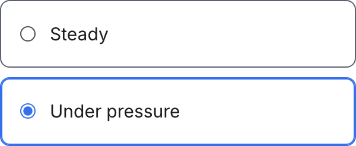
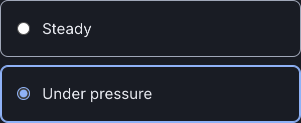

Atom
Radio option
A bordered row holding a native radio and its label. The whole row is the target, not the twelve pixel circle.
Anatomy
.wf-radiothe row: a bordered box with a 3:1 boundary and 16px padding, the whole of it clickableinput[type=radio]the native circle, in the action colour:has(input:checked)the chosen row, which takes the action colour on its border and an inset ring
Variants and sizes
State
Chosen or not. The chosen option carries the one interactive colour and nothing else changes: no fill, no weight, no size.
rest
not chosen
checked
chosen
The empty cells, and why they are empty
No emphasis axis and no size axis: every radio option in the product is one full width row, because the employee answering it is on a phone and has thirty seconds.
When to use it
The employee check-in, and only there. Three answers, one tap, no scrolling. It is the single most important control in the product for the riskiest assumption: if it is awkward, participation drops and there is no signal at all.
The rule, and the anti rule
Do this. Give the whole row to the label, so a thumb hits an option rather than a circle. Show every alternative at once: three is the number this product uses.
Not this, use Checkbox instead. Do not use it for something that can be on and off independently. That is a Checkbox.
States
Focus is on the row, through focus-within, because the thing a person moves between is the row and not the hidden circle inside it.
One delta from the family. Each pair is the light theme on the left and the dark theme on the right, captured from the live component on this page, not drawn. They are re-taken by the check at step 9, which fails on a byte shift.


checkedThe named difference: checked is not a fill. The row takes--line-action on its border and an inset ring of the same colour, so the chosen option reads at 4.53 without a second background colour entering the languageRe-take these with node scratchpad/states.js /tmp/jobs.json against a local server on port 8931.
Technical
| Level | 1, atom |
|---|---|
| File | design/system/components/radio.css |
| Roles it reads | --bg-action, --bg-control, --color-focus, --line-action, --line-control, --line-hover |
| In the product | 6 of 99 screens |
| In colour | 1 screens: checkin-questions |
Markup to copy
<div class="kit-stack" style="max-width:360px"> <label class="wf-radio"><input type="radio" name="d" checked> Steady</label> <label class="wf-radio"><input type="radio" name="d"> Under pressure</label> <label class="wf-radio"><input type="radio" name="d"> Hard week</label> </div>